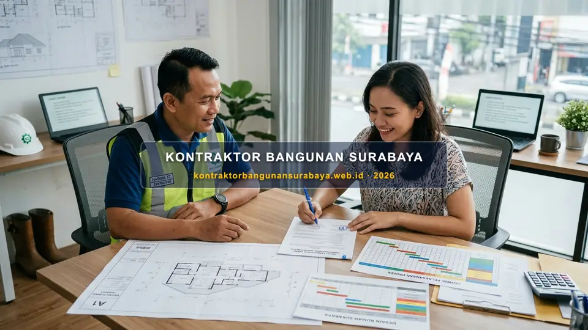

1. Cara Menyusun Kontrak Kerja (SPK) yang Melindungi Pemilik Rumah
Bagaimana cara menyusun kontrak kerja atau SPK yang melindungi pemilik rumah?
Menyusun Surat Perjanjian Kerja (SPK) yang melindungi pemilik rumah membutuhkan kejelasan lingkup pekerjaan, spesifikasi material, jadwal dan skema pembayaran bertahap, serta klausul mengenai denda keterlambatan dan garansi pekerjaan. kontraktorbangunansurabaya.web.id menerapkan SPK yang jelas pada setiap proyek untuk memberikan kepastian hukum bagi pemilik rumah di Surabaya.
Keberadaan kontrak kerja berbadan hukum yang mengikat bukan semata-mata formalitas administratif, melainkan instrumen perlindungan fundamental yang memastikan setiap hak dan kewajiban antara pemilik rumah dan pihak pelaksana konstruksi terjaga secara adil, transparan, serta dapat dipertanggungjawabkan di hadapan hukum.
Prinsip Perlindungan Hukum Konsumen Proyek
Kontrak konstruksi yang terstruktur rapi memberikan batasan tegas terhadap kualitas struktur, timeline pelaksanaan, serta kepastian alokasi dana pembangunan hunian bersama tim bangun rumah baru profesional.
2. Komponen Wajib dalam SPK Konstruksi Rumah Tinggal
SPK yang baik sebaiknya mencantumkan lingkup pekerjaan secara rinci, termasuk spesifikasi material yang disepakati untuk setiap item pekerjaan, agar tidak terjadi perbedaan interpretasi antara pemilik rumah dan kontraktor mengenai standar material yang akan digunakan.
Lampiran gambar kerja dan RAB yang menjadi bagian tidak terpisahkan dari SPK juga penting dicantumkan secara eksplisit, sehingga apabila terjadi perbedaan pemahaman, kedua dokumen tersebut dapat dijadikan rujukan resmi yang mengikat kedua belah pihak.
| Pasal / Komponen SPK | Kandungan Dokumen Wajib | Fungsi Perlindungan Pemilik Rumah |
|---|---|---|
| Identitas & Legalitas Para Pihak | Nama pemilik, identitas badan usaha kontraktor, alamat, dan nomor kontak resmi | Menjamin legalitas hukum pertanggungjawaban perdata kedua belah pihak |
| Lingkup & Spesifikasi Teknis | Daftar pekerjaan struktur, arsitektur, MEP, serta merek & mutu material (SNI) | Mencegah penurunan spesifikasi (downgrade) material secara sepihak |
| Lampiran Gambar DED & RAB | Gambar kerja arsitektur 3D DED dan lembar Bill of Quantities (BOQ) terperinci | Menjadi rujukan baku audit fisik volume dan visual bangunan di lapangan |
| Milestone & Kurva-S Waktu | Tanggal mulai, target struktur/atap/finishing, dan tanggal serah terima kunci | Acuan resmi pemantauan ketepatan jadwal progres mingguan proyek |
| Klausul Change Order | SOP tertulis pengajuan tambah-kurang pekerjaan beserta approval biaya | Mencegah sengketa biaya tambahan tak terkontrol di tengah proses pengerjaan |
Jadwal pelaksanaan dengan milestone yang jelas, misalnya target penyelesaian struktur, atap, dan finishing pada tanggal tertentu, juga penting dicantumkan agar kedua belah pihak memiliki acuan waktu yang jelas untuk memantau progres proyek.
Klausul mengenai prosedur perubahan pekerjaan (change order), misalnya jika pemilik rumah ingin mengubah spesifikasi di tengah proyek, juga sebaiknya diatur sejak awal agar perubahan tersebut dapat diproses secara tertib tanpa menimbulkan sengketa mengenai biaya tambahan.
3. Klausul Denda Keterlambatan dan Skema Pembayaran Bertahap
Klausul denda keterlambatan, biasanya berupa persentase tertentu dari nilai kontrak per hari keterlambatan, memberikan insentif bagi kontraktor untuk menyelesaikan proyek tepat waktu, sekaligus memberikan kompensasi bagi pemilik rumah apabila terjadi keterlambatan yang bukan disebabkan oleh faktor di luar kendali kontraktor.

Skema pembayaran bertahap yang mengikuti progres fisik pekerjaan, bukan berdasarkan tanggal kalender semata, membantu memastikan pembayaran yang dilakukan sesuai dengan pekerjaan yang benar-benar telah diselesaikan di lapangan.
Skema Termin Progres Fisik Ideal
- DP Awal (10-20%): Mobilisasi material awal, alat, dan pekerjaan persiapan tapak.
- Termin I (20-25%): Selesai pekerjaan pondasi, sloof, dan kolom lantai 1.
- Termin II (25-30%): Pengecoran dak lantai 2, balok, dan dinding bata.
- Termin III (20%): Struktur atap selesai, plesteran, dan instalasi MEP dasar.
- Termin IV (10-15%): Finishing keramik, cat, kusen, dan sanitair.
Perlindungan Retensi & Denda
- Retensi (5%): Dana ditahan hingga masa pemeliharaan 3-6 bulan tuntas.
- Denda Keterlambatan: 1‰ (satu permil) per hari dari nilai sisa pekerjaan.
- Opname Fisik Bersama: Penagihan termin wajib didahului berita acara pemeriksaan fisik.
- Garansi Struktur Resmi: Sertifikat garansi struktur tertulis pasca serah terima kunci.
Retensi pembayaran, yaitu menahan sebagian kecil nilai kontrak hingga masa pemeliharaan berakhir, juga menjadi praktik umum yang memberikan jaminan tambahan bagi pemilik rumah terhadap penyelesaian pekerjaan minor yang mungkin masih tersisa setelah serah terima awal.
Dengan mengunci pembayaran berbasis progres fisik nyata, pemilik rumah terlindungi dari risiko pembayaran mendahului pekerjaan yang sering kali memicu keterlambatan atau penghentian proyek sepihak.
4. Pendampingan Penyusunan SPK yang Adil dari kontraktorbangunansurabaya.web.id
SPK yang adil sebaiknya melindungi kepentingan kedua belah pihak, bukan hanya pemilik rumah, misalnya juga mencantumkan klausul mengenai keterlambatan pembayaran dari pemilik rumah yang dapat berdampak pada penyesuaian jadwal pelaksanaan proyek.
kontraktorbangunansurabaya.web.id menyusun SPK yang transparan dan seimbang sejak awal proyek, sehingga baik pemilik rumah maupun tim pelaksana memiliki pemahaman yang sama mengenai hak dan kewajiban masing-masing sepanjang proses konstruksi berlangsung.
Komitmen Transparansi Kontrak Kerja Kami di Surabaya:
- Legalitas Badan Hukum Jelas: Kontrak ditandatangani di atas meterai resmi dengan identitas hukum yang sah.
- RAB & BOQ Lampiran Baku: Tidak ada biaya tersembunyi; seluruh volume dan harga satuan terkunci transparan.
- Laporan Mingguan & Kurva-S: Pemilik rumah menerima update progres mingguan terdokumentasi foto dan persentase fisik.
- Jaminan Sertifikat Garansi: Perlindungan kebocoran, keretakan dinding, dan kekuatan struktur pasca serah terima kunci.
SPK yang baik sebaiknya didukung RAB yang jelas sebagai lampiran utamanya. Pelajari lebih lanjut mengenai kontraktor rumah surabaya bergaransi agar seluruh dokumen proyek Anda saling melengkapi dan melindungi kepentingan Anda.
Konsultasi Desain & Dokumen Proyek Terpadu
Pastikan seluruh gambar teknis arsitektur dan kalkulasi biaya disiapkan secara matang melalui layanan desain arsitektur dan RAB serta layanan renovasi bangunan kami sebelum kontrak ditandatangani.
5. FAQ Seputar Penyusunan Kontrak Kerja (SPK) Konstruksi Rumah
6. Konsultasi Gratis Sekarang
Ingin berdiskusi lebih lanjut mengenai kebutuhan konstruksi bangunan Anda di Surabaya? Hubungi tim kami melalui WhatsApp di 0889-8964-3555 untuk konsultasi awal tanpa biaya bersama kontraktorbangunansurabaya.web.id.
Konsultasi WhatsApp di 0889-8964-3555Reza Maulana Nehru
Praktisi & Penulis Edukasi Konstruksi Bangunan di Kontraktor Bangunan Surabaya. Berfokus pada manajemen kontrak konstruksi (SPK), estimasi biaya RAB terperinci, mitigasi risiko proyek bangunan, dan standarisasi pelaksanaan fisik di Surabaya dan Jawa Timur.